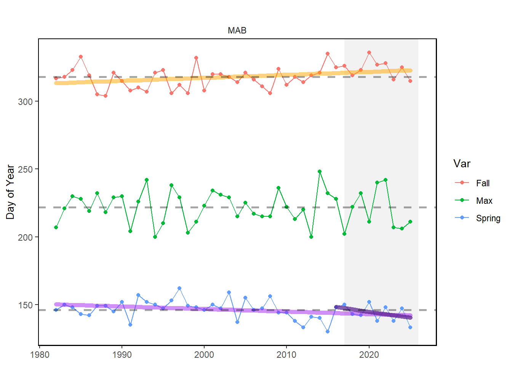
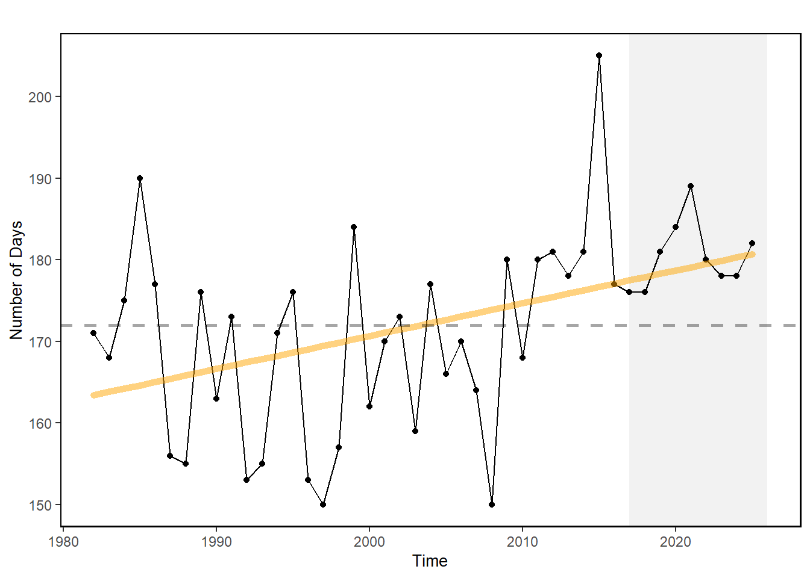
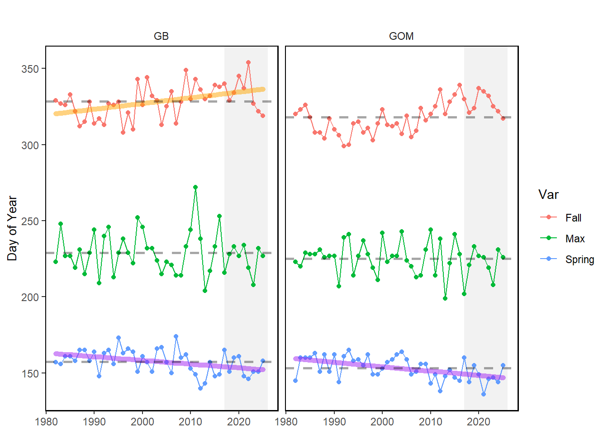
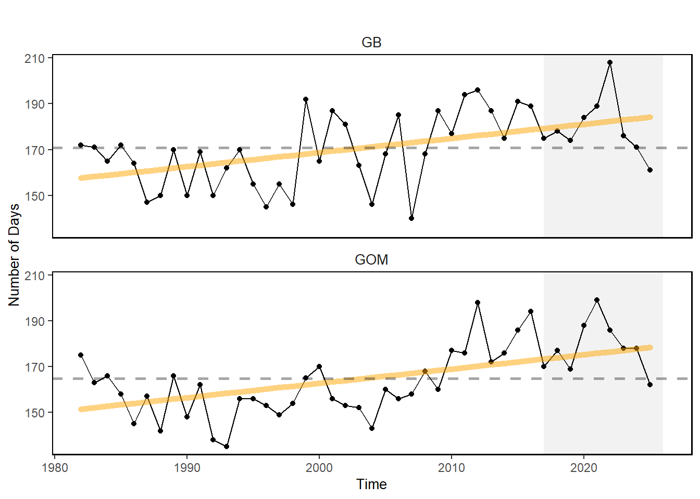

48 Transition Dates
Last updated July 23, 2026
Description: The date that cool winter conditions transition to warm stratified summer conditions.
Contributor(s): Brandon Beltz, Kimberly Bastille, Kevin Friedland
Affiliations: NEFSC
Indicator Family:
Indicator Category:
Synthesis Theme:
48.1 Introduction to Indicator
Transition dates are defined as the day of the year when surface temperatures changeover from cool to warm conditions in the spring and back to cool conditions in the fall.
48.2 Key Results and Visualizations
Ocean summer length in Mid-Atlantic: the annual total number of days between the spring thermal transition date and the fall thermal transition date. The transition dates are defined as the day of the year when surface temperatures changeover from cool to warm conditions in the spring and back to cool conditions in the fall.
timing, Mid-Atlantic

length, Mid-Atlantic

timing, New England

length, New England

48.3 Implications
Prolonged fall temperatures have been linked to the increased number of cold-stunned Kemp’s ridley sea turtles found in Cape Cod Bay [66]
48.4 Indicator statistics
Spatial scale: by EPU
Temporal scale: Annual time series (1982 to present)
Variable definitions
48.5 Get the data
Point of contact: EDAB, edab.data@noaa.gov
ecodata dataset: ecodata::trans_dates
Tech Doc link: https://noaa-edab.github.io/tech-doc/trans_dates.html